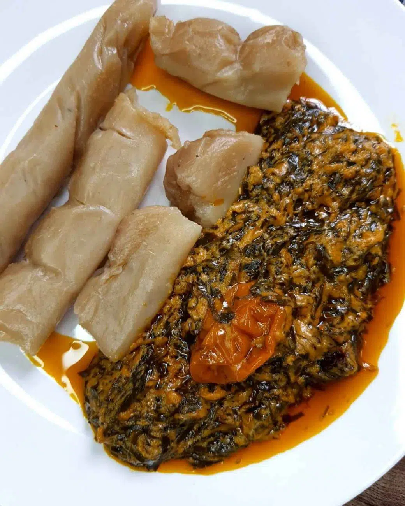

Featured Recipes

Ndolé
Description: A delicious spicy stew made with bitterleaf and groundnuts (peanuts).
Ingredients:
- 500g Bitterleaf (washed thoroughly)
- 200g Groundnuts (roasted and blended)
- 1kg Beef or Fish (your choice of protein)
- 1/4 Cup Palm Oil
- 1 Onion (chopped)
- 3 Cloves Garlic (minced)
- 2 Cups Crayfish (ground)
- Seasoning cubes and Salt to taste
Instructions:
- Boil the bitterleaf for about 15 minutes to reduce bitterness. Drain and set aside.
- Cook the beef or fish with onions, garlic, seasoning cubes, and salt until tender.
- Add the blended groundnuts and crayfish to the pot, stirring to create a thick sauce.
- Mix in the bitterleaf and simmer for another 10 minutes.
- Add palm oil and adjust seasoning as needed.
- Serve with plantains, rice, or fufu.

Fufu and Eru
Description: A popular dish featuring fermented cassava (fufu) and Eru (a leafy vegetable).
Ingredients:
- 2 Cups Eru (finely chopped)
- 1kg Waterleaf (or spinach, finely chopped)
- 500g Smoked Fish
- 1/4 Cup Palm Oil
- Seasoning cubes and Salt to taste
- Fermented cassava fufu
Instructions:
- Cook the waterleaf until soft, then add Eru and stir well.
- Mix in the smoked fish and palm oil, then simmer for 10 minutes.
- Add seasoning cubes and salt to taste.
- Prepare the fufu by boiling it and stirring until smooth.
- Serve the Eru with fufu.

achu-soup-recipe
Description: A yellow soup made with spices and served with pounded cocoyams.
Ingredients:
- 1kg Cocoyams (boiled and pounded)
- 1 Cup Palm Oil
- 1/2 Cup Limestone Water
- 2 Cups Beef or Fish Stock
- Spices (including yellow achu spices)
- Salt to taste
Instructions:
- Mix the palm oil with limestone water until creamy.
- Heat the mixture, then add spices and stock.
- Simmer for 15 minutes, stirring occasionally.
- Serve the soup with pounded cocoyams.

Ekwang
Description: Grated cocoyams wrapped in leaves and cooked in palm oil and spices.
Ingredients:
- 1kg Cocoyams (peeled and grated)
- Fresh leaves (e.g., cocoyam leaves or spinach)
- 1 Cup Palm Oil
- 2 Cups Crayfish (ground)
- Seasoning cubes and Salt to taste
Instructions:
- Wrap grated cocoyam in small portions using fresh leaves.
- Place the wraps in a pot and cover with water.
- Add palm oil, crayfish, and seasoning, then cook for 1 hour.
- Adjust seasoning as needed and serve hot.

Okok
Description: A traditional dish made with wild spinach and cassava paste.
Ingredients:
- 2 Cups Wild Spinach (finely chopped)
- 500g Cassava (peeled and grated)
- 1/4 Cup Palm Oil
- 2 Cups Crayfish (ground)
- Seasoning cubes and Salt to taste
Instructions:
- Boil cassava until soft and pound into a smooth paste.
- Cook the spinach with palm oil, crayfish, and seasoning for 15 minutes.
- Serve the spinach mixture with cassava paste.